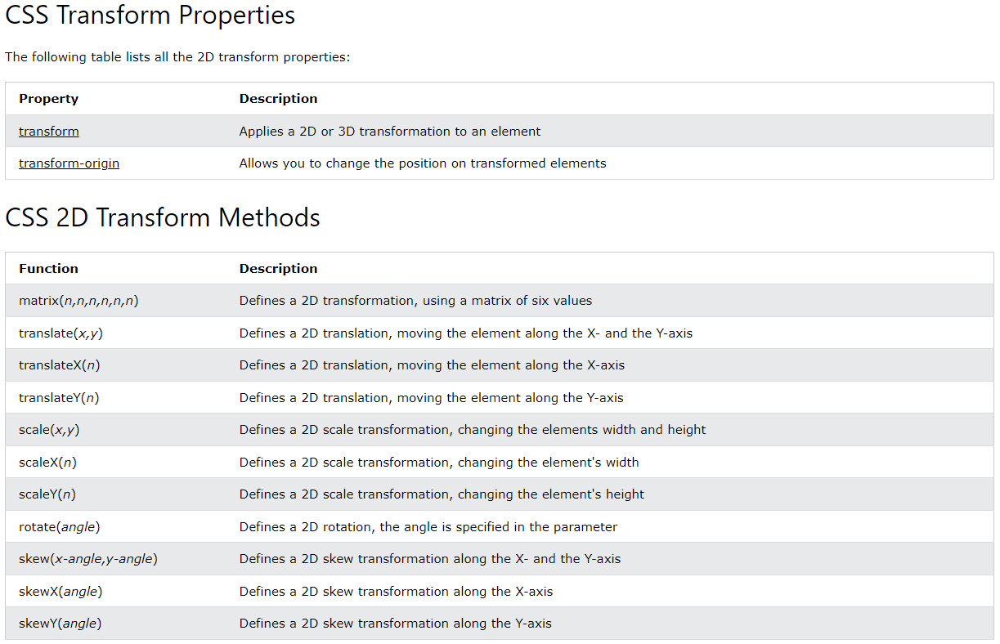

Há várias transformações no CSS, que nos permitem mover, girar, redimensionar e inclinar elementos.
Transformações 2D
Estas são as transformações 2D:translate(), rotate(), scaleX(), scaleY(), scale(), skewX(), skewY(), skew(), matrix().
O método translate()
Este método move um elemento de sua posição atual de acordo com os parâmetros fornecidos para os eixos X e Y. O exemplo abaixo move o elemento <div> 50 pixels para a direita e 100 pixels para baixo:
div {
transform: translate(50px, 100px);
}
O método rotate()
Este método gira um elemento nos sentidos horário (com números positivos) ou anti-horário (com números negativos) de acordo com o angulo fornecido. O exemplo abaixo gira o elemento <div> em 20 graus:
div {
transform: rotate(20deg);
}
Os métodos scale(), scaleX() e scaleY()
Estes métodos aumentam ou diminuem o tamanho de um elemento de acordo com os parâmetros fornecidos para largura (eixo X) e altura (eixo Y). Números decimais reduzem o tamanho do elemento. O exemplo abaixo aumenta o elemento <div> para ser 2 vezes maior na largura e 3 vezes maior na altura:
div {
transform: scale(2, 3);
}
Observação: os itens contidos no elemento também são redimensionados de acordo.
O exemplo abaixo duplica a largura do elemento:
div {
transform: scaleX(2);
}
O exemplo abaixo diminui a altura do elemento pela metade:
div {
transform: scaleY(0.5);
}
Os métodos skew(), skewX() e skewY()
Estes métodos são usados para inclinar elementos ao longo dos eixos X, Y ou ambos de acordo com os ângulos fornecidos. O exemplo abaixo inclina o elemento <div> em 20 graus no eixo X e 10 graus no eixo Y:
div {
transform: skew(20deg, 10deg);
}
Observação: neste método, se o segundo parâmetro não for definido, é considerado como 0, e o elemento só inclina no eixo X.
O exemplo abaixo inclina o elemento <div> em 20 graus no eixo X:
div {
transform: skewX(20deg);
}
O exemplo abaixo inclina o elemento <div> em 30 graus no eixo Y:
div {
transform: skewY(30deg);
}
Números negativos inclinam o elemento no sentido contrário.
O método matrix()
Este método combina todos os métodos 2D. Para usá-lo é preciso definir 6 parâmetros desta forma: matrix(scaleX(), skewY(), skewX(), scaleY(), translateX(), translateY())

Transformações: propriedades e métodos
Transformações 3D
Estas são as transformações 3D:rotateX(), rotateY(), rotateZ().
Os métodos rotateX(), rotateY() e rotateZ()
Estes métodos giram um elemento no respectivo eixo, de acordo com o grau definido: